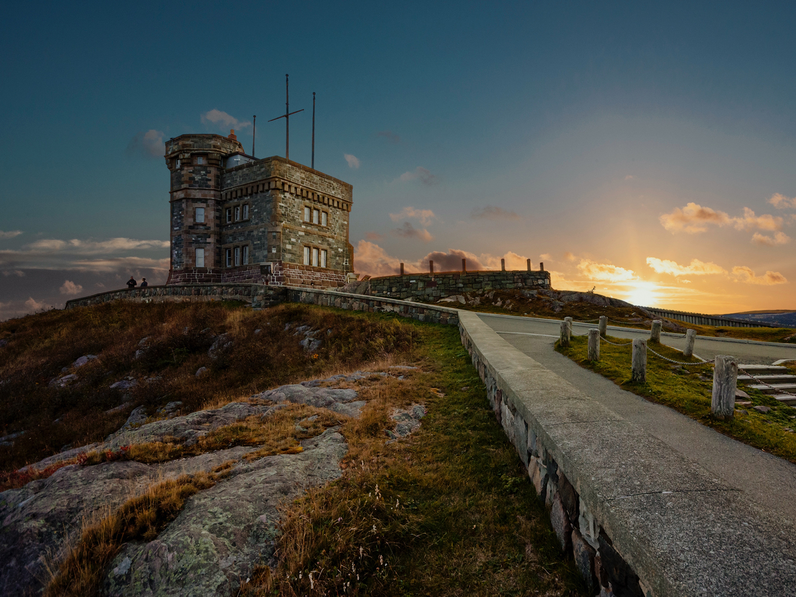
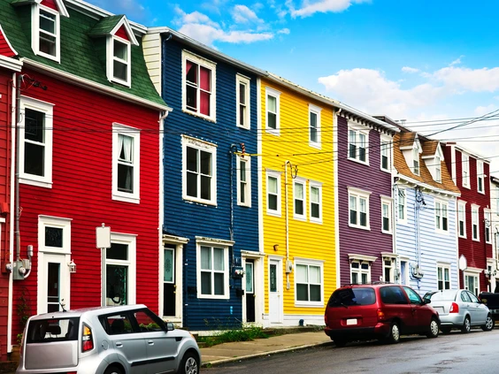
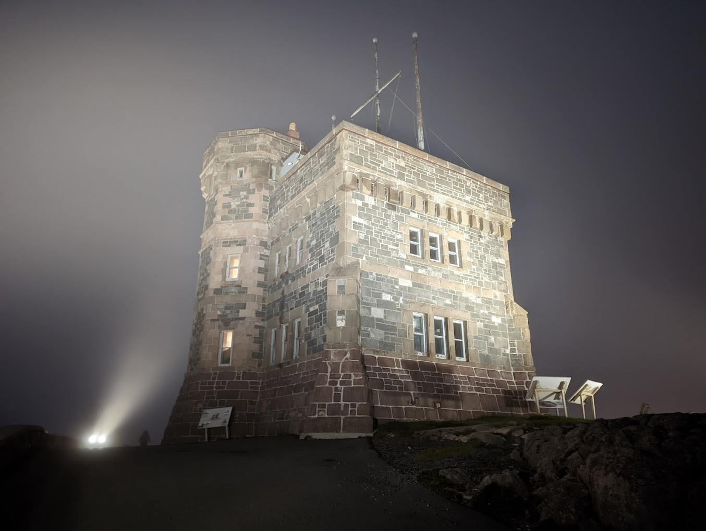
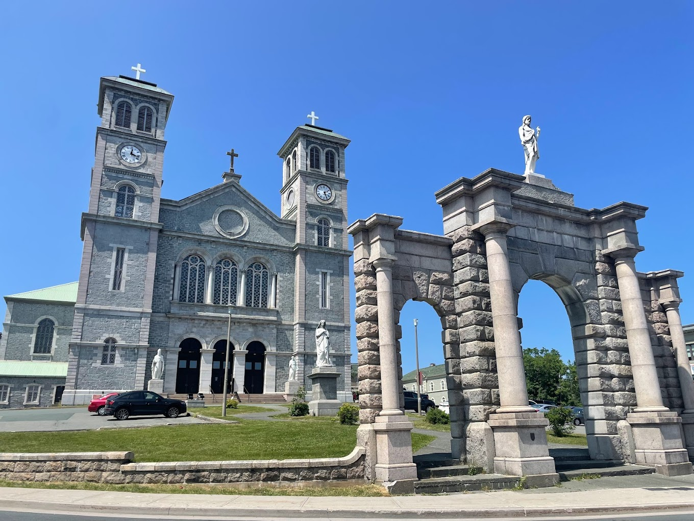
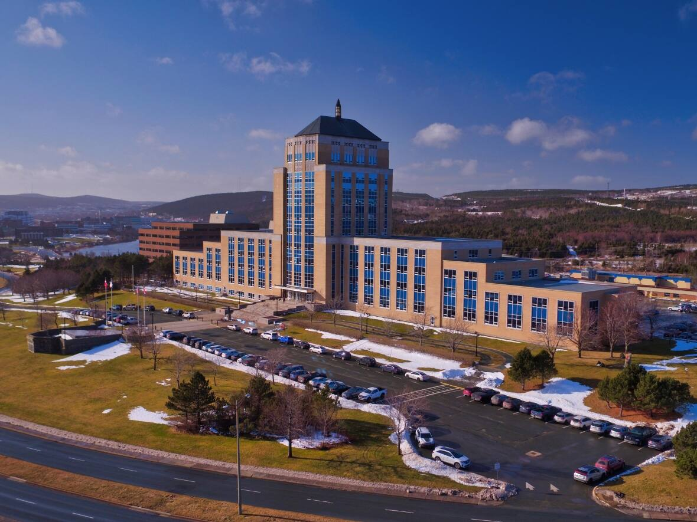

Now let's look at them in more detail
-
Signal Hill
Signal Hill is well known as the site where the era of mass communication was born. In 1901, Guglielmo Marconi suspended an antenna 500 feet above the hill with a kite and received the first transatlantic wireless signal – the letter S (three short beeps) in Morse code.
-
Row Houses
Colourful is a term thrown around the travel-writing world like so much clichéd confetti. But the “painted ladies” of San Francisco, terraces of stately and vividly clad Victorian houses, and the “jelly-bean” row houses of St. John's transcend the hackneyed with their splashy paint schemes. Indeed, no less than the New York Times has described the hilly streets, artsy vibe and sweeping harbour views of the Newfoundland capital as a “smaller but earthier” version of the Northern California tech hub.
-
Cabot Tower on Signal Hill
Cabot Tower is a tower in St. John's, Newfoundland and Labrador, situated on Signal Hill. Construction of the tower began in 1898 to commemorate the 400th anniversary of John Cabot's landing in Newfoundland, and Queen Victoria's Diamond Jubilee
-
Basilica of St.John's the Baptist
The Basilica-Cathedral of St. John the Baptist in St. John's, Newfoundland and Labrador is the metropolitan cathedral of the Roman Catholic Archdiocese of St. John's, Newfoundland and the mother church and symbol of Roman Catholicism in Newfoundland.
-
the Confederation Building
The Confederation Building serves as the home of the Newfoundland and Labrador House of Assembly. It is located on Confederation Hill overlooking Newfoundland and Labrador's capital city, St. John's. The brick- and concrete-clad building has 11 stories and is 64 metres tall.